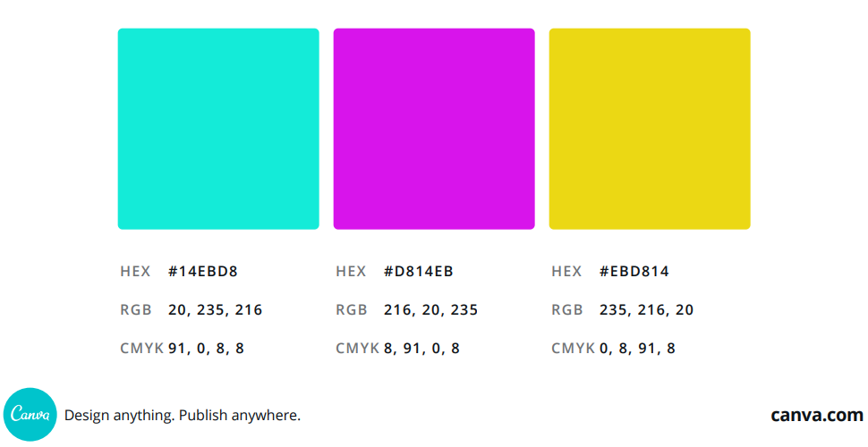

Color Scheme:

Dominant Color
The blue one will be used in the logo, manu tabs, highlight important information, title, headlines and buttons.
Complementary Colors
The purple and yellow ones will be used in the corrent menu tab, subtitle, highlight secondary information and call to action